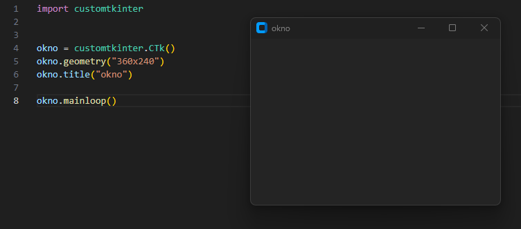

Wielu z nas zainteresowała się programowaniem, przez gry komputerowe.
Każdy chciał nauczyć się programowania, by zaprogramować osobiście swoją grę.
Uczyłeś się bardzo długo i napisałeś wiele fajnych programów. Pomyślałeś - "Jestem już gotowy!"...
I zderzyłeś się z rzeczywistością, aby utworzyć pojedyncze okno musisz pisać jakieś dziwne chieroglify.
Na pomoc Ci, ruszyły biblioteki graficzne! W tym artykule zapoznam Cię z jedną z nich.
Sama biblioteka TKinter ma swojego brata - Customtkinter,
który jest bardzo łatwo implementowany do twojego programu. Żeby zacząć tworzenie aplikacji
okienkowych musimy najpierw zaistalować kilka bibliotek. Wprowadź następujące polecenia do terminalu VS
Code.
Od teraz wszystkie klasy i funkcje biblioteki będą działać.
- tkinter -> pip install tk
- customtkinter -> pip install customtkinter
import customtkinter
Od teraz wszystkie klasy i funkcje biblioteki będą działać.
Zaczynamy tworzyć okno. Tworzymy obiekt customtkinter.CTk().
Określamy wymiary okna funkcją geometry() i nazwę funkcją
title()
Na koniec dodaj mainloop(), by okno się pokazało. Nie zapomnij o tym!
Na koniec dodaj mainloop(), by okno się pokazało. Nie zapomnij o tym!

Teraz możesz stylizować, dodając obiekty.
Wszystko co chcesz umieścić w oknie, umieść przed mainloop()
Dodaj zmienną customtkinter.CTkLabel(). Najeżdżając kursorem lub klikająć "Go to the definition" możesz sprawdzić jakie właściwości ma poszczególna klasa z biblioteki.
Gdy utworzysz obiekt, użyj funkcji pack() lub place(), by go wywołać.
Dodaj zmienną customtkinter.CTkLabel(). Najeżdżając kursorem lub klikająć "Go to the definition" możesz sprawdzić jakie właściwości ma poszczególna klasa z biblioteki.
Gdy utworzysz obiekt, użyj funkcji pack() lub place(), by go wywołać.
Jeśli planujesz napisać jakąś aplikację lub grę, w której będą wyświetlane różne okna, powinieneś tworzyć
"ramki".
Ramki pozwalają na łatwiejsze zarządzanie i zmianę zawartości okna. (Patrz film "zmiana ramek").
Utwórz obiekt w klasie customtkinter.CTkFrame() i ustaw parametr master (obiekt wyżej w herarchi / warstwa pod obecną warstwą) na warstwę główną, tutaj określone jako okno.
Później, gdy tworzysz nowe obiekty, nie zapomnij ustawić master na wyższy obiekt w hierarchi, by bezbłednie się wyświetlały lub nachodziły.
Warstwa główna
|-Ramka
|-Obiekt1
|-obiekt2

Ramki pozwalają na łatwiejsze zarządzanie i zmianę zawartości okna. (Patrz film "zmiana ramek").
Utwórz obiekt w klasie customtkinter.CTkFrame() i ustaw parametr master (obiekt wyżej w herarchi / warstwa pod obecną warstwą) na warstwę główną, tutaj określone jako okno.
Później, gdy tworzysz nowe obiekty, nie zapomnij ustawić master na wyższy obiekt w hierarchi, by bezbłednie się wyświetlały lub nachodziły.
Aby usunąć warstwę lub jakikolwiek gadżet, będziesz musiał wykorzystać customtkinter.CTkButton()
i metodę command. Użycie lambda: może zapobiec przed
nie chcianym uruchomieniem funkcji wraz ze startem programu.

Przekształćmy teraz kod na oddzielne funkcje. Każda funkcja odpowiada za 1 okno.
 Aby można było wywoływać okna niezależnie,
musimy utworzyć jeszcze jedną funkcję odpowiadającą za niszczenie i tworzenie nowego. Funkcja Nowe() pobiera 2 argumenty,
pierwszy - ramka obecnego okna do zniszczenia i drugi - funkcja nowego okna do utworzenia.
Aby można było wywoływać okna niezależnie,
musimy utworzyć jeszcze jedną funkcję odpowiadającą za niszczenie i tworzenie nowego. Funkcja Nowe() pobiera 2 argumenty,
pierwszy - ramka obecnego okna do zniszczenia i drugi - funkcja nowego okna do utworzenia.
Autorzy projektu
- Jan Pietrzak - autor strony
- Fabian Szaniawski - autor tekstu
- Dawid Paluch - prezenter
- Alan Matusiak - prezenter
Jeśli zainteresowałeś się tematem, sprawdź dokumentacje widżetów, aby poszerzyć swoją wiedzę.
Dokumentacje
Widżetów
Pliki kursu: Python
Pliki kursu: Python